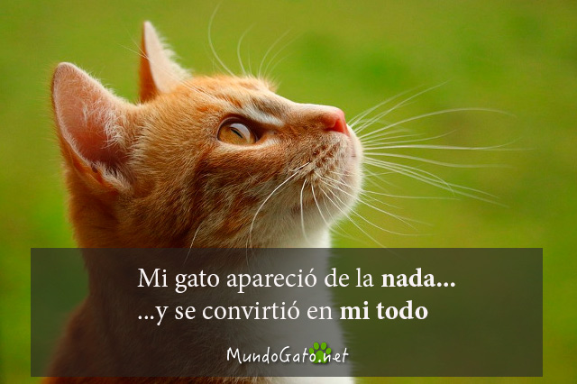

Adoptar en lugar de comprar es una elección que encarna la compasión y la responsabilidad. Al elegir la adopción, no solo brindas un hogar amoroso a un animal necesitado, sino que también contribuyes directamente a reducir el número de animales sin hogar y a combatir la explotación comercial. Esta decisión no solo salva vidas, sino que también promueve una cultura de cuidado y respeto hacia los animales. Además, al adoptar, estás apoyando la práctica de esterilizar y vacunar a los animales antes de la adopción, asegurando su bienestar y salud. Adoptar es un acto poderoso que trasciende la mera posesión de una mascota, y establece un vínculo especial basado en la gratitud mutua y el amor incondicional.
Además de brindar compañía y afecto, la adopción de un gato también puede tener beneficios significativos para la salud humana. Numerosos estudios respaldan la idea de que la presencia de gatos en el hogar puede tener efectos positivos en la salud mental y física. La interacción con gatos ha demostrado reducir los niveles de estrés y ansiedad, disminuir la presión arterial y promover la liberación de endorfinas, hormonas asociadas con la sensación de felicidad. La suave y relajante compañía de un gato puede crear un ambiente calmado en el hogar, contribuyendo a una sensación general de bienestar. Además, el ronroneo de un gato, que se cree tiene propiedades terapéuticas, puede tener un efecto tranquilizador en sus dueños, mejorando su estado de ánimo y aliviando el estrés. En resumen, adoptar un gato no solo enriquece nuestras vidas con afecto y amor, sino que también puede ser un camino hacia una mejor salud emocional y física.
El proceso de adopción suele incluir una entrevista y un proceso de selección para asegurarse de que el animal se adapte bien a tu hogar. Una vez que adoptas, estarás dando un paso importante en la lucha contra el abandono de mascotas.
